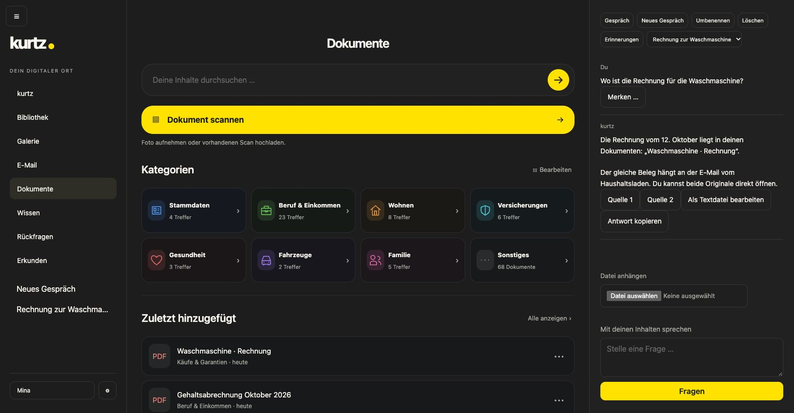
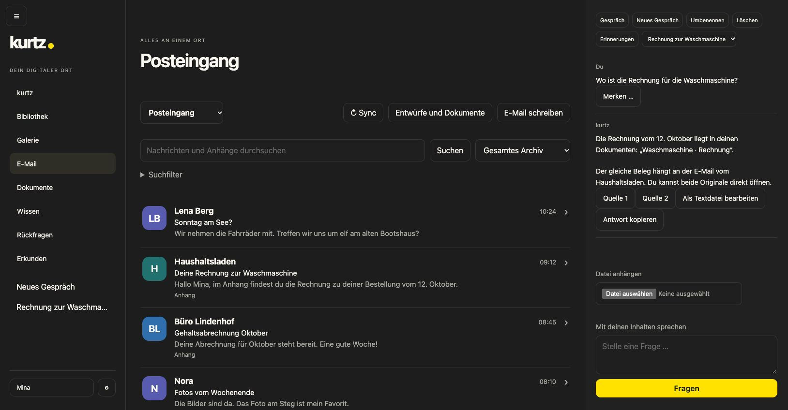
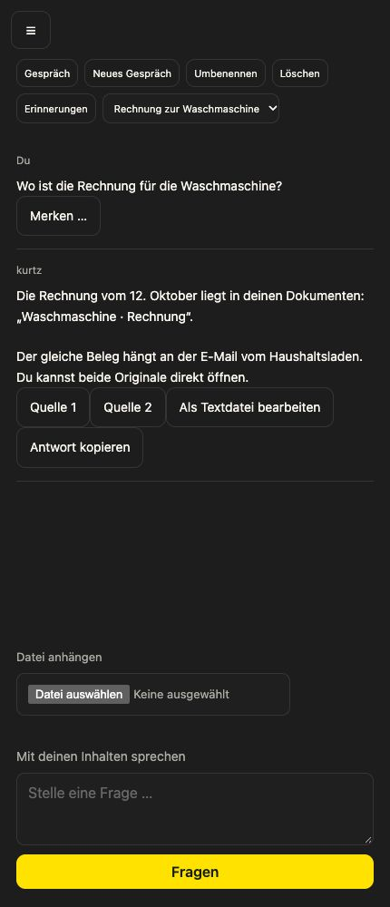

A product in the making October 2026
A look inside kurtz
Documents, email, photos and films, together in one place. With a private assistant to help with the finding, sorting and everyday admin — on hardware you control.
Here’s what that looks like.

The paperwork drawer,
without the rummaging.
A payslip, the rental agreement, an appliance receipt. Search your documents, add a scan or start with a familiar part of life, such as home or family.
Your assistant can stay beside the document view. You can ask about what you’re looking for without leaving your things behind.
Categories use everyday names. The technical services behind them stay out of this view.
And the things
that arrive by email.
The inbox is part of the same place. Read a message, search archived mail and attachments, or bring a useful attachment into your documents.

The current email integration is for WEB.DE. Your archive stays on your own hardware.
“Where’s the receipt
for the washing machine?”
That’s an ordinary question. You shouldn’t have to remember which app holds the answer.
In this example, kurtz points to the saved document and the email it came with. Source buttons let you go back to the originals and check for yourself.
The answer shown here is scripted example data in the real interface. It illustrates the workflow; it isn’t a measured AI result.
Your photos and films have their own gallery and library in the same navigation. This first tour focuses on paperwork and email.
Meet the standalone video player
What we choose to leave out
Private digital life already asks enough of you. Another application should earn its place by taking some of that work away.
That is the test for kurtz: keep the useful capability, then remove as much complexity as possible. Fewer technical decisions in everyday use. Less switching between places. Details within reach when you need them.
Privacy belongs in that design from the start. Your storage and AI can run on your own hardware. Local AI doesn’t require sending your private content to an AI provider.
Hardware, connected services and optional cloud AI
The first version is being developed around an Apple Silicon Mac at home, with kurtz on Mac, iPhone, iPad and in the browser.
Connected services, such as an existing email provider, keep their own data arrangements. External AI is an optional, explicit choice. There is no automatic switch from a local model to a cloud provider.
Your digital life. Actually yours.
Still being made.
kurtz is in private development. There’s no public download or announced launch date for the full app yet.
The standalone kurtz video player is available now.
About these pictures
Unretouched captures of the current web app, shown with fictional documents, people, email and a scripted assistant answer. The interface shown is German. Layouts and features may change before release.
Capture details & credits